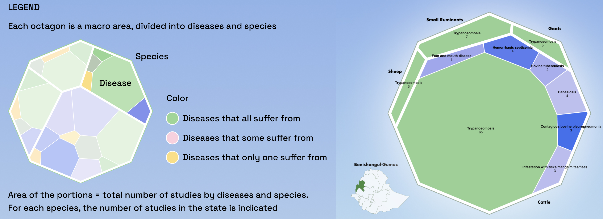

Explore livestock disease data in Ethiopia in an engaging way.
Ethiopia’s livestock sector supports the livelihoods of millions of smallholder farmers. However, despite the improvements of recent years, livestock productivity remains low due to critical constraints, such as infectious diseases. We believe that having an overall and clear understanding of livestock disease data can help with future decisions and actions.
Livestock disease in Ethiopia (LDE) project is based on a systematic map dataset provided by SEBI team, which contains 716 articles related to livestock diseases in Ethiopia from 2010 to 2019. With interactive visualizations and narratives, we illustrate the current landscape of livestock disease prevalence and mortality, highlight areas for future attention and communicate the findings to the public in an engaging way.
Graph Interpretation

By state, you can check the number of studies of every disease of every species.
Taking Trypanosomisis in Benishangul-Gumuz as an example, the block in the left lower corner shows that there are 65 studies of Trypanosomisis on cattle, while the color green shows it is a disease suffered by all four species.
> DSLE team
Data Storytelling for Livestock in Ethiopia (DSLE) team consists of five MA and MSc Design Informatics students from University of Edinburgh. We apply interdisciplinary methods to analyze, visualize and communicate livestock disease data in Ethiopia.
Rui Li - data analysis and visualization
Yinan Mi - website planning and development
Wenhua Jiang - narrative and copywriting
Peijun Zhang - 3D modelling and animation
Boya Chen - 3D modelling and animation
> SEBI team
Dr Louise Donnison - domain insights and guidance
Xiawen Wang - domain insights and guidance
Isla MacVicar - domain insights and guidance
> DS4D course team
Dr Benjamin Bach - project feedback and suggestions
Martin Disley - project feedback and suggestions